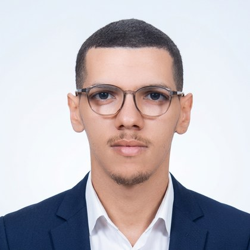

ISSAM DERAI
🌍 Remote & International Relocation (Gulf · Europe)Full-Stack Web & Mobile Developer · E-Commerce · Network, Systems & Cybersecurity Specialist
✉️ deraiyissame@gmail.com
📞 +212 6 89 53 69 04
📍 Marrakech, Morocco
in/issam-derai ↗
github.com/issamxx ↗
B.Tech (Licence Pro)Web Networks & Security (2026)
3+ YearsFull-Stack, E-Commerce & IT
6+ Production ProjectsLaravel, Mobile & DevSecOps
AR · EN · FRTrilingual Communication
Professional Summary
Full-Stack Web & Mobile Developer and Network & Cybersecurity Technician holding a Professional Bachelor's Degree (Licence Pro) in Web Networks Engineering & Security from Cadi Ayyad University (2026). Over 3 years of hands-on freelance and internship experience delivering production websites (including urbagroupe.ma), custom Laravel & React e-commerce platforms, cross-platform mobile apps, Docker/CrowdSec hardened web stacks, and HTTP/TLS security audits. Trilingual in Arabic, English, and French — available immediately for remote roles or relocation to the Gulf (UAE, Saudi Arabia, Qatar) and Europe.